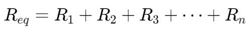
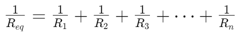
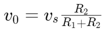
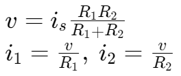
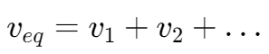
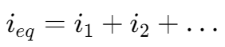

电阻的串联与并联
电阻串联 | Resistors in Series

电阻并联 | Resistors in Parallel

串并联的简化 | Series-Parallel Simplification


分压 | Voltage Divider


分流 | Current Division


电压源串联 | Voltage Sources in Series
多个电压源串联可以等效为一个电压源

电流源并联 | Current Sources in Parallel
多个电流源并联可以等效为一个电流源
